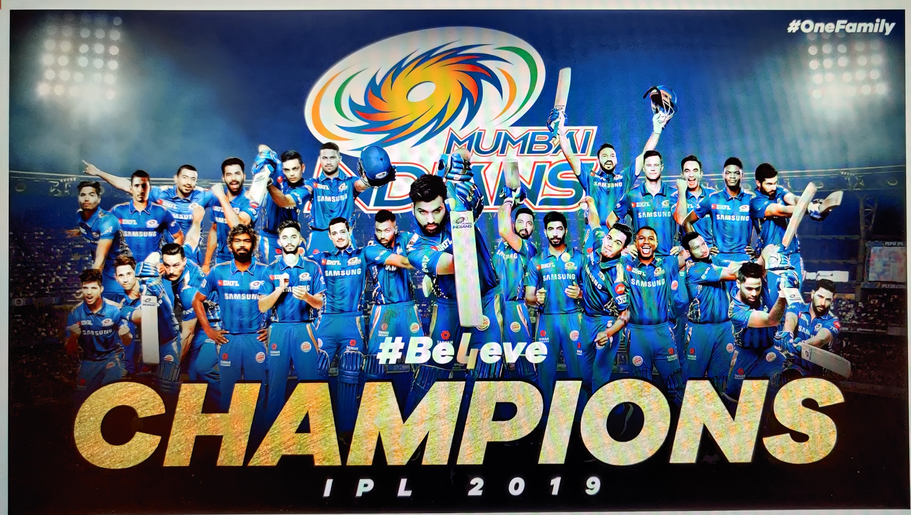

Mumbai Indians, as you guessed from the name, is an Indian cricket club that plays in the Indian Premier League. MI has been one of the most consistant teams in the tournament since it's innogration in 2008. MI has won the tournament 5 times so far with the most recent wins in the previous and this year's season of the IPL. MI currently has some of the best international and domestic talents including big names like Rohit Sharma, Jasprit Bumrah, Hardik Pandya, Kieron Pollard, etc.
I also watch other cricket leagues like The Big Bash and The Caribbean Premier League. These leagues produce some great talents and give opportunities to the domestic cricketers to showcase their talent at a higher stage.